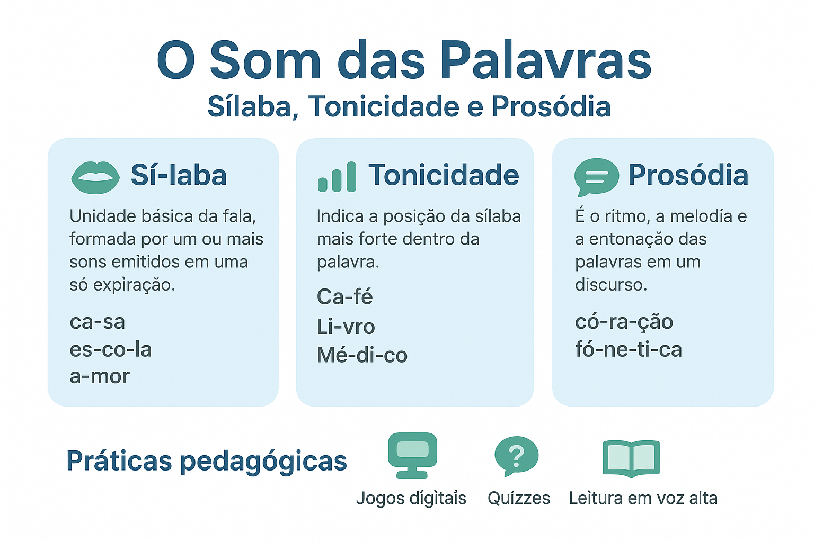

O Som das Palavras: Sílaba, Tonicidade e Prosódia
O estudo da sonoridade das palavras é fundamental para compreender não apenas a ortografia, mas também a correta pronúncia, a acentuação e a musicalidade da língua portuguesa. Nesse contexto, conceitos como divisão silábica, tonicidade e prosódia ganham destaque no ensino da língua, auxiliando tanto na produção oral quanto na interpretação escrita.
Sílaba: Unidade rítmica da fala
A sílaba pode ser definida como “a menor unidade sonora emitida por uma só expiração” (CUNHA; CINTRA, 2001, p. 69). Em outras palavras, trata-se de um agrupamento de sons organizados em torno de uma vogal, que constitui o núcleo da sílaba. Por exemplo:
- ca-sa → duas sílabas
- es-co-la → três sílabas
- a-mor → duas sílabas
A divisão silábica é orientada por critérios fonéticos e fonológicos, respeitando a estrutura sonora da língua. Segundo Bechara (2009, p. 47), “a sílaba é, ao mesmo tempo, uma unidade de articulação e de percepção auditiva”.
Tonicidade: O destaque sonoro
A tonicidade refere-se ao acento principal de uma palavra, ou seja, à sílaba que recebe maior intensidade na pronúncia. Essa sílaba é chamada sílaba tônica. As demais são denominadas átonas. Veja os exemplos:
- café → oxítona
- casa → paroxítona
- lâmpada → proparoxítona
Classificação das palavras quanto à tonicidade
- Oxítonas: têm a última sílaba como tônica (café, jacaré, maracujá).
- Paroxítonas: têm a penúltima sílaba como tônica (mesa, livro, açúcar).
- Proparoxítonas: têm a antepenúltima sílaba como tônica (lâmpada, música, pêssego).
Como lembra Câmara Jr. (2011, p. 92), “a tonicidade é um dos elementos essenciais para distinguir palavras e sentidos na língua portuguesa”.
Prosódia: A musicalidade da língua
A prosódia é o estudo da correta pronúncia das palavras quanto à entonação e ao acento. Ela está relacionada ao ritmo, à cadência e à melodia da fala. Muitas vezes, erros de prosódia podem alterar o sentido, como em:
- rúbrica (assinatura) ≠ rubríca (forma verbal de rubricar)
- pólo (lugar) ≠ polô (modalidade esportiva)
De acordo com Rocha Lima (2002, p. 87), “a prosódia é um recurso essencial da expressão oral, pois confere clareza, expressividade e distinção de significados”.
Práticas pedagógicas e abordagens modernas
No contexto escolar e digital, o estudo da sílaba, tonicidade e prosódia pode ser dinamizado com metodologias ativas, tais como:
- Jogos digitais: aplicativos que desafiam os alunos a identificar a sílaba tônica em diferentes palavras.
- Quizzes: questionários interativos que reforçam a classificação de oxítonas, paroxítonas e proparoxítonas.
- Leitura em voz alta: prática com marcação da sílaba tônica, estimulando a percepção da entonação correta.
Tais estratégias ampliam a aprendizagem significativa, aproximando o estudante da vivência real do uso da língua.
Conclusão
O estudo do som das palavras — envolvendo sílaba, tonicidade e prosódia — é essencial para compreender a fonética e a fonologia do português. Além de favorecer a correção ortográfica e a pronúncia adequada, esse conhecimento contribui para a expressividade da fala e para a interpretação de textos, consolidando-se como um pilar da competência linguística.
Referências
BECHARA, Evanildo. Moderna gramática portuguesa. 37. ed. Rio de Janeiro: Nova Fronteira, 2009.
CÂMARA JR., Joaquim Mattoso. Estrutura da língua portuguesa. 20. ed. Petrópolis: Vozes, 2011.
CUNHA, Celso; CINTRA, Lindley. Nova gramática do português contemporâneo. 3. ed. Rio de Janeiro: Nova Fronteira, 2001.
ROCHA LIMA, Carlos Henrique da. Gramática normativa da língua portuguesa. 47. ed. Rio de Janeiro: José Olympio, 2002.